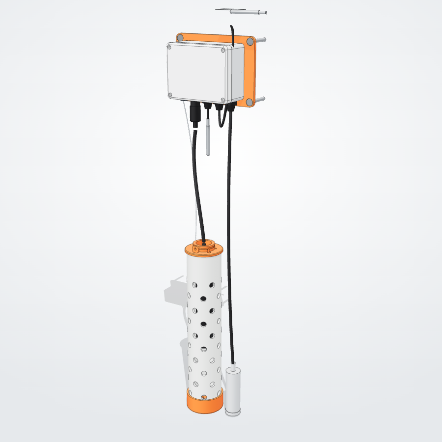
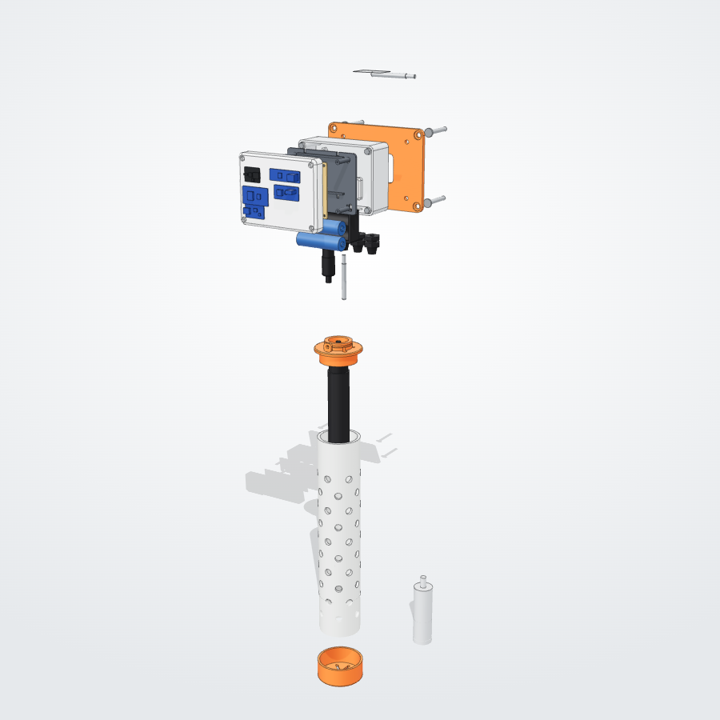
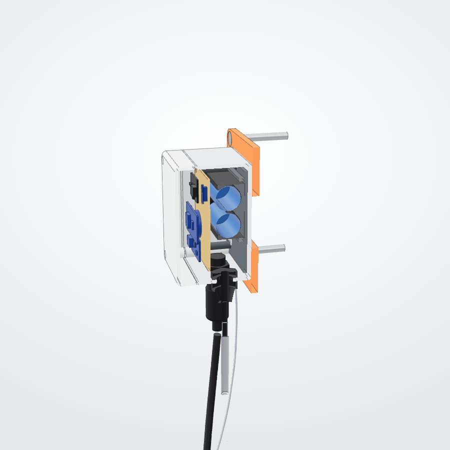

Build a Saltback drain node
A battery sensor that hangs in a storm-drain catch basin and logs how salty the runoff is, every few minutes, all winter. This guide builds it from the AliExpress parts list: two field nodes plus a bench kit for calibration.



01Parts
Your list, grouped and totalled. Rows marked added aren't on it: they fix a power problem (see section 02) or are needed to mount the node. Prices are AliExpress ranges in US dollars.
| Part | Search for | Qty | Total ($) |
|---|---|---|---|
| Field nodes (for two) | |||
| Conductivity + temperature sensor4-electrode or graphite, IP68, highest range (0–100 or 0–200 mS/cm), Modbus RTU, 5–24 V. Not the $3 TDS module. | RS485 conductivity sensor EC temperature water Modbus | 2 | 70–120 |
| ESP32-C3 SuperMini | ESP32-C3 SuperMini | 2 | 4–6 |
| RS485 interface, auto direction | TTL to RS485 module automatic flow control 3.3V | 2 | 2–4 |
| Real-time clock DS3231 | DS3231 RTC module | 2 | 2–4 |
| DS18B20 probes, 5-pack2 per node: air + taped to the grate | DS18B20 waterproof stainless probe 1m | 1 | 4–5 |
| MT3608 boost converter | MT3608 boost converter module | 2 | 1–2 |
| AO3401 P-channel MOSFET (lot) | AO3401 P-channel MOSFET | 1 | 1–2 |
| 18650 holder, 2 slot parallel | 18650 battery holder 2 slot parallel | 2 | 2–3 |
| TP4056 USB-C charger with protection | TP4056 type-C charger module protection | 2 | 1–2 |
| IP67 ABS junction box 115 × 90 × 55 | IP67 ABS waterproof junction box 115x90x55 | 2 | 8–12 |
| PG7 cable glands, 10-pack | PG7 cable gland nylon | 1 | 2–3 |
| ePTFE breather vent M12 | ePTFE breather vent M12 waterproof | 2 | 2–4 |
| Silica gel 5 g | silica gel packets 5g | 1 | 2–3 |
| SP13 waterproof connector, 4 pin | SP13 waterproof connector 4 pin | 2 | 4–6 |
| Perfboard, heat shrink, 22 AWG silicone wire | perfboard / heat shrink assortment / 22AWG silicone wire | 1 | 5–8 |
| Bench kit | |||
| ESP32 DevKitC (desk testing) | ESP32 DevKitC USB-C CP2102 | 1 | 4–5 |
| Reference EC pen, reads to about 20 mS/cm | EC meter pen 0-19.99 mS/cm ATC | 1 | 6–10 |
| Calibration solutions 1413 µS/cm + 12.88 mS/cm | conductivity calibration solution 1413 12.88 | 1 | 3–5 |
| Scale 0.01 g | digital pocket scale 0.01g 200g | 1 | 5–6 |
| Graduated cylinder set | plastic graduated cylinder set | 1 | 3–4 |
| Buy locally | |||
| 18650 cells, Samsung 35E or MolicelAliExpress cells are often fake capacity | 18650BatteryStore (US) | 4 | 20–28 |
| Your list, required | 151–242 | ||
| Added in this guide (for two nodes) | |||
| 2N7002 N-MOSFET (lot)Needed so the ESP32 can fully switch off the 12 V supply (section 02) | 2N7002 SOT-23 | 1 | 1–2 |
| Resistor kit: 4.7 k, 10 k, 100 k, 220 k | 1/4W resistor kit | 1 | 2–3 |
| SOT-23 to DIP adapter boards | SOT23 to DIP adapter | 1 | 1–2 |
| Screw terminals 5.08 mm, 3 and 4 pin | 5.08mm PCB screw terminal | 4 | 1–2 |
| CR2032 coin cells (for the DS3231) | local | 2 | 2–3 |
| 2" schedule 40 PVC pipe, 1 m (300 mm per node) + 2 hose clamps | hardware store | 1 | 10–14 |
| Concrete screws 6 × 45 mm, M4 screws + heat-set inserts | hardware store | 1 | 6–9 |
| Aluminium foil tape, 1.5 mm stainless wire rope + crimps | hardware store | 1 | 8–12 |
| PETG or ASA filament for 5 printed parts (about 170 g per node) | — | — | 0–8 |
| With the additions | 182–297 | ||
| Optional | |||
| RS485 water level sensor 0–1 mTurns concentration into load (concentration × volume) | RS485 water level sensor pressure 0-1m | 1 | 30–50 |
Tools: soldering iron, multimeter (needed to set the boost converter), 12.5 mm and 13 mm step drill bits, wire stripper, small screwdrivers, hot glue, 3D printer (or a library or school printer). Printed-part files are in device/out-b/stl: mounting plate (B-107), sensor head (B-403), silt cap (B-404), wall plate (B-501).
02How it works
The ESP32-C3 sleeps almost all the time. Every 15 minutes (every 2 during a storm) it wakes, switches on power to the sensors, waits three seconds, reads conductivity and water temperature from the probe over RS485, reads the two DS18B20s and the battery, writes one line to its flash memory and switches everything off again. Two switches make that possible:
- 12 V switch (AO3401 #1 + 2N7002). Cuts the battery to the MT3608 boost converter, so the probe and the boost draw nothing between readings.
- 3.3 V switch (AO3401 #2). Powers the RS485 module, the clock module and the DS18B20s only while reading. The clock keeps time on its coin cell.
03Wiring
All grounds connect together: battery −, TP4056 OUT−, ESP32 G, MT3608 IN− and OUT−, the RS485 and clock modules, the DS18B20 black wires and SP13 pin 2.
Connection table
| From | To | Notes |
|---|---|---|
| Cells + / − | TP4056 B+ / B− | Through the 2-slot holder; cells in parallel |
| TP4056 OUT+ | VBAT net | Use OUT, not B+, so the protection chip guards the cells |
| VBAT | ESP32-C3 5V pin | Its on-board regulator makes 3.3 V from the battery |
| VBAT | AO3401 #1 source | 10 k from its gate to VBAT keeps it off |
| AO3401 #1 drain | MT3608 IN+ | |
| AO3401 #1 gate | 2N7002 drain | 2N7002 source to GND, gate to GPIO10 with 100 k to GND |
| MT3608 OUT+ | Screw terminal → SP13 pin 1 | 12 V to the probe. Check the probe's colour code in its manual |
ESP32 3V3 | AO3401 #2 source | Gate to GPIO1 with 10 k to 3V3 (LOW = on) |
| AO3401 #2 drain | Switched 3.3 V rail | Feeds the RS485 module, DS3231 and DS18B20s |
| RS485 module TXD / RXD | GPIO20 / GPIO21 | Module TXD → ESP RX (20); ESP TX (21) → module RXD |
| RS485 module A / B | Screw terminal → SP13 pins 3 / 4 | If the sensor doesn't answer, swap A and B |
| DS3231 SDA / SCL | GPIO6 / GPIO7 | The module has its own pull-ups |
| DS18B20 yellow (data), both | GPIO4 | 4.7 k from data to switched 3.3 V; red to switched 3.3 V; black to GND |
| VBAT | 220 k → GPIO0 → 220 k → GND | Battery voltage; add a 100 nF cap across the lower resistor if readings jump |
04Prepare the modules
- Remove two LEDs. On the ESP32-C3 SuperMini, desolder (or flick off with a hot iron) the red power LED. On the DS3231 (ZS-042), remove its power LED too. Each draws a couple of milliamps all the time, which alone would empty the battery in a few months.
- Make the DS3231 safe for a CR2032. The ZS-042 tries to charge its coin cell. With a normal CR2032, remove the charging resistor (marked 201, near the diode) or the diode. Then fit the CR2032.
- Set the MT3608 to 12 V before it touches the probe. Power its input from a cell or a USB supply, put the multimeter on OUT, and turn the brass screw until it reads 12.0 V (many turns counter-clockwise lowers it). Check your probe's manual: if it says 5–24 V, 12 V is a safe middle.
- Give the sensor an address. Most ship as Modbus address 1 at 9600 baud. Leave it, unless you add the level sensor: that one must be changed to address 2 with its own software or the vendor's command before both share the bus.
- Match the cells. Charge both 18650s fully (to 4.2 V) before putting them in the parallel holder, so one doesn't dump current into the other.
05Build the board
Everything inside the box sits on one 9 × 7 cm perfboard, held by four standoffs above the battery holder. The 3D model shows the layout: perfboard (B-207).
- Plan with headers. Solder female headers for the ESP32-C3, RS485 module, DS3231 and MT3608, so modules can be swapped. Put the ESP32-C3 and the TP4056 with their USB-C ports at the same short edge.
- Solder the switches. Mount the two AO3401s and the 2N7002 on SOT-23 adapter boards, then onto the perfboard, with their resistors: 10 k gate pull-ups, 100 k from the 2N7002 gate to GND, the 4.7 k for the DS18B20 data line and the 220 k + 220 k battery divider.
- Run the power wiring in red and black 22 AWG silicone wire: TP4056 → VBAT → ESP32 5V, VBAT → AO3401 #1 → MT3608, ESP32 3V3 → AO3401 #2 → switched rail. Keep the 12 V and battery wires short and thick.
- Add the screw terminals at the edge nearest the bottom of the box: a 4-pin for the probe (12 V, GND, A, B) and a 3-pin for the DS18B20s (3.3 V sw, data, GND).
- Check before power. With no cells in: no short between VBAT and GND, or 3.3 V and GND. Insert the cells, measure 3.3 V on the ESP32, about 0 V on the switched rail and 0 V at the 12 V terminal.
- Coat it. Once it all works (section 08), brush conformal coating or clear nail polish over the solder side. Drain air is wet and salty; bare joints corrode in one winter.
06Build the box
- Print the parts in PETG or ASA, 3 walls, 25% infill: mounting plate, sensor head, silt cap, wall plate. Press four M4 heat-set inserts into the wall plate with the soldering iron.
- Drill the bottom wall of the junction box (the short side that will face down), in a line 20 mm from the base: M12 vent (12.2 mm), SP13 socket (13.2 mm), and three PG7 glands (12.5 mm). The box (B-101) in the 3D model shows the spacing. Deburr every hole.
- Fit the vent, SP13 socket and glands with their nuts inside. Blank the third gland with a short piece of rod until you add the level sensor.
- Fit the SP13 plug to the probe cable. Cut the probe's cable to length (enough to reach from the box to the bottom of the basin, plus 30 cm), and solder it to the plug: V+ to 1, GND to 2, A to 3, B to 4. Heat-shrink each wire.
- Mount the inside. Screw the mounting plate to the box's floor bosses, zip-tie the battery holder into its rails, fit the perfboard on the standoffs, wire the SP13 socket and DS18B20 leads to the screw terminals, add the silica gel packet.
- Build the probe guard. Cut 300 mm of 2" PVC and drill about 60 holes of 10 mm all round, leaving 30 mm solid at the top. Push the silt cap on the bottom. Thread the probe up through the sensor head so it hangs by its own shoulder, clamp the collar with a hose clamp, and push the head into the tube.
07Firmware
Download saltback_node_b.ino. In the Arduino IDE install the ESP32 boards package (Espressif, 3.x) and the libraries ModbusMaster, OneWire, DallasTemperature and RTClib. Choose the board ESP32C3 Dev Module and set USB CDC On Boot: Enabled, then upload over USB-C.
Settings at the top of the file to check first:
| Setting | Default | What to do |
|---|---|---|
REG_START, IDX_EC, IDX_TEMP, scales | EC = register 1, temp = register 0 × 0.1 | Look up your sensor's register map in its manual; the Show raw registers button helps you match them |
WARMUP_MS | 3000 | Raise to 10000 if the first readings after power-on look low |
SLOW_S / FAST_S | 15 min / 2 min | Fast mode starts when conductivity rises 10% and lasts 6 hours |
AP_PASSWORD | saltback-node | Change it |
DAILY_AP_HOUR_UTC | 21 (4 pm US Eastern) | When the download network opens every day, for 10 minutes |
CAL_GAIN, CAL_OFFSET | 1, 0 | From the bench calibration below |
08Bench test and calibrate
- First power-up. Insert the cells and press RESET. The blue LED blinks and a Wi-Fi network
Saltback-XXXXappears. Join it, openhttp://192.168.4.1, tap Set clock from this phone, then Read sensors now. - Find the air probe. Hold one DS18B20 in your hand and read again: the one that warms is the one the firmware calls
airorsurface. Label it, or swap the two in the code. - Two-point calibration. Put the probe and the EC pen in the 1413 µS/cm solution, then the 12.88 mS/cm solution, at room temperature. Write down both readings from each. Then
CAL_GAIN = (12880 − 1413) / (probe_high − probe_low)andCAL_OFFSET = 1413 − CAL_GAIN × probe_low. - Salt doses (the Experiment 1 check). In 1 L of tap water, add 0, 5, 10, 20 and 40 g of table salt in turn, stirring well, and log each. Expect roughly 0.2–0.8, 9, 17, 33 and 61 mS/cm at 25 °C, the same freezing-point and conductivity tables the Saltback model uses. The pen only reaches about 20 mS/cm, so it checks the first three; the probe alone covers the rest.
- Overnight battery test. Leave the node running on the bench with fast mode forced (set
SLOW_S = FAST_S), then download the log in the morning. The battery voltage column shows how fast it drains; use it to check the estimate in section 11.
Upload the bench CSV into the Saltback app to compare with the model.
09Install in a drain
- Pick the drain. A curb inlet on a salted road, with a sump (standing water at the bottom) and a grate you can stand next to safely. Note the road name and how many lane-miles drain to it, for the app.
- Mount the wall plate on the basin wall just below the grate, with four concrete screws. Screw the box to it with the M4 screws.
- Hang the probe guard so the probe sits in the sump water near the outlet pipe, with the bottom of the tube clear of the silt. Tie the stainless tether from the sensor head to a wall-plate screw, so the tube's weight hangs on the tether and never on the cable. Plug the SP13 in.
- Place the temperature probes. Air probe: hanging free below the box. Surface probe: flat against the underside of the grate, held with aluminium foil tape.
- Check it works before the grate goes back: use the hotspot trick in section 10 and tap Read sensors now.
10Collect the data
You never need to open the drain to get the data:
- Turn on your phone's hotspot named
saltback-collect(rename the hotspot, or the phone, to that) and stand by the grate. - Wait for the node's next wake: up to 15 minutes, or 2 during a storm. It sees your hotspot and opens its own network,
Saltback-XXXX, for 10 minutes. Or come at the daily window (4 pm US Eastern by default). - Turn the hotspot off, join
Saltback-XXXX, openhttp://192.168.4.1and tap Download log (CSV).
The log has one line per reading:
time_utc,unix,ec_uS_cm,water_C,air_C,surface_C,level_cm,battery_V,flags 2027-01-06T14:30:00,1799245800,2140,1.85,-3.12,-5.40,,3.981,
Flags: E probe didn't answer, A/S a temperature probe missing, T the clock lost time, R no clock. Add the storm's truck log (salt per pass, timing) in the app's storm log, and its Drain salt measured comes from this file.
11Battery life
An estimate from typical datasheet currents. Measure yours with the overnight bench test.
| What | Current | Per day |
|---|---|---|
| Sleeping: ESP32-C3 + regulator, charger protection, divider (LEDs removed) | ≈ 70 µA | ≈ 1.7 mAh |
| One reading: 3.5 s awake, probe at 12 V through the boost | ≈ 140 mA | 0.14 mAh each |
| Normal day: 96 readings + 96 hotspot checks | ≈ 17 mAh | |
| Storm: 6 hours at one reading every 2 minutes | + 25 mAh | |
| Daily download window, 10 minutes of Wi-Fi | ≈ 80 mA | + 13 mAh |
| Two 3500 mAh cells, about 5000 mAh usable in the cold | ≈ 5–8 months |
Before it goes in the drain
- LEDs removed from the ESP32-C3 and DS3231; DS3231 charging resistor removed
- MT3608 measured at 12 V; 0 V at the probe terminal while asleep
- Sensor answers on the raw-registers page; register map and scale checked against its manual
- Two-point calibration entered; salt-dose readings look sensible
- Air and surface probes identified
- Clock set; log downloads; overnight battery test done
- Board coated; gasket seated; vent, glands and SP13 tight; desiccant inside
- Public works has approved the drain and is there to lift the grate